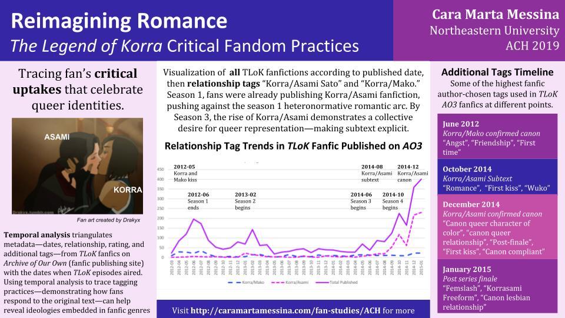

Reimagining Romance: The Legend of Korra Critical Fandom Practices (ACH 2019)
This page is written as supplemental material for the poster created by for The Association for Computers and the Humanities, 2019.
{kind=link}
Research Question
How can critical fandom uptakes be traced in fanfictions?
Important Vocabulary
Uptakes are is the interdependent relationships between genres, specifically the anticipated responses to a genre in particular contexts that have been deemed appropriate based on place, time, frame, and function (Freadman, 2002). In fanfiction, fans’ uptake both the original cultural material as well as the conventions and expectations in fanfiction genres and publishing platforms.
Critical fandoms—as partially defined by andré carrington (2013), Paul Booth (2012), and Alexis Lothian (2018)—are fan practices that actively challenge white supremacy, gender inequality, abelism, homophobia, transphobia, and other forms of oppression in both the fan community iteself and from the original cultural texts.
Fanfictions are stories and texts written by fans of a particular cultural material (movie, book, television show, etc.) or person (celebrity, politician, etc.). These stories reimagine or expand upon the original cultural material in some way. Fanfictions are not homogenous and have countless genres, styles, ideologies, and approaches.
Data
The Legend of Korra fanfictions published on Archive of Our Own (AO3). TLoK is a children's/young adult television show that aired from 2012–2014 on Nickelodeon. The show is known for its revolutionary choice to canonize a bisexual couple, Korra and Asami (both women), in its series finale. Because of the original canon material, the fan community may already be thinking critically about queer representations and stories over other fan communities.
Archive of Our Own is a popular fanfiction publishing site, whose discoverability and information systems are heavily customizable by each fan writer and reader (Fiesler, Morrison, and Bruckman, 2016). Because of this, AO3 contains rich data to trace how fans react to moments of shows and the ways in which fans reimagine and restory (Thomas and Stornaiuolo, 2016) texts. While AO3 as a whole is a heterogeneous publishing site with different fan communities and ideologies, overall AO3 is known for its relationship to fan scholarship and academia, which will also impact the dataset's embedded ideologies.
Method
Temporal analysis using Python and Excel to parse data, triangulating metadata from AO3—specifically writer-chosen tags—with dates when important episodes aired from the show. This method encourages the researcher to choose specific metadata (relationship, additional, and even ratings) to study how fans are resisting or engaging with specific moments in the show. These uptakes can demonstrate deeper ideologies fans take on while writing fanfiction; exploring at particular queer relationships or for particular tags like “racebending” or “genderbending” can demonstrate how fans are resisting normative and exclusive ideologies that may be embedded in the media they are consuming.
Limitations
This type of temporal analysis only works well with television shows that are or were airing while AO3 was live (since 2009). TLoK is also a show that is already progressive in its politics, so fans are more likely to be progressive and critical; what about shows that hold exclusive and harmful ideologies?
Also, while tagging practices and the celebration of queer romances may suggest critical fandom practices, tagging practices do not necessarily demonstrate exactly how fans are representing Korra/Asami’s or any other queer relationship. Further research using NLP and other forms of analysis (word2vec or doc2vec, for example), are needed.
Further Research
Another form of analysis to trace uptakes is comparative analysis, which might compare two different AO3 fandoms or use NLP to compare language used in different tagging practices. As I continue this work, I will incorporate both temporal and comparative analyses to better describe and trace fan uptakes, specifically critical fan uptakes.
Further research into critical fans' tagging and genre practices are needed in general. Fan studies has picked up in the past ten years and continues to move into a direction where scholars address and point out the nuances, contradictions, and complexities in fan communities. Critical fandoms as a theoretical frameworks encourages researchers to search for the pedagogical and methodological values of fan communities.